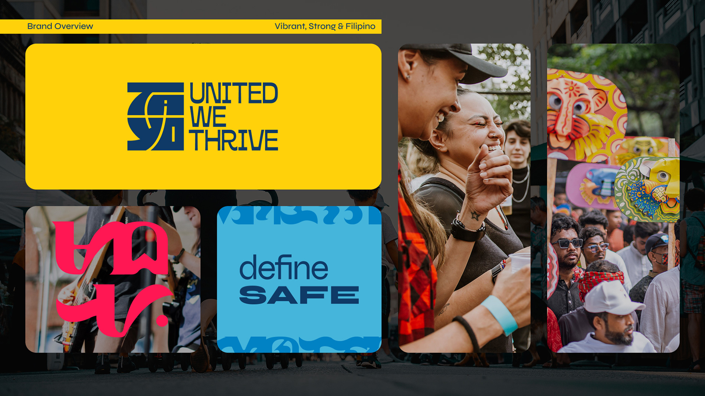
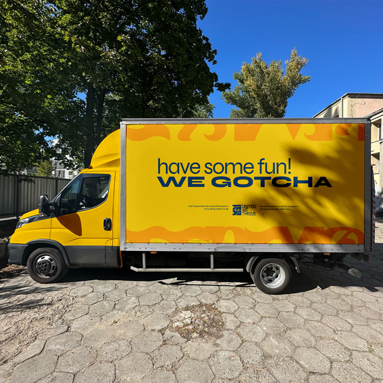
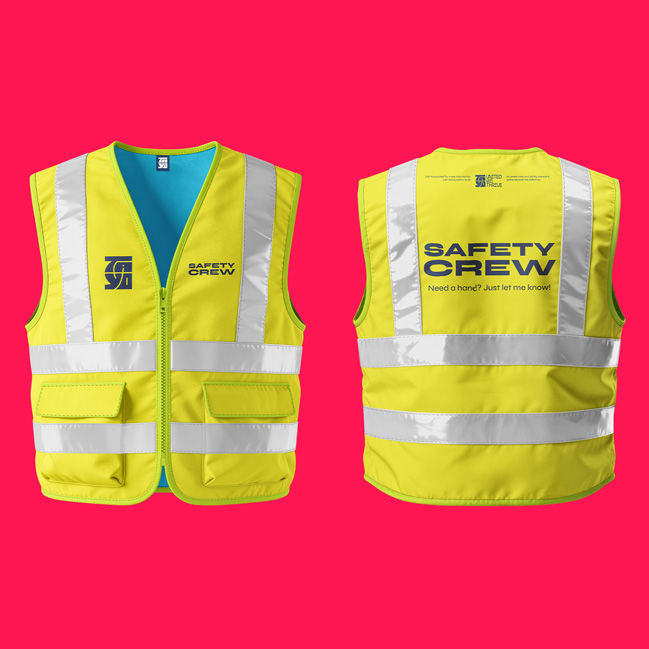
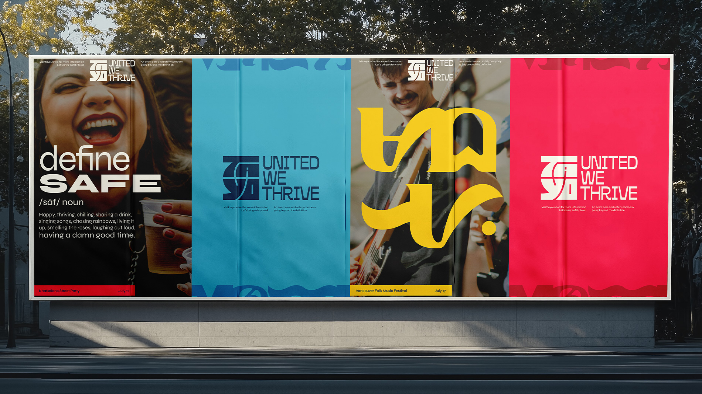
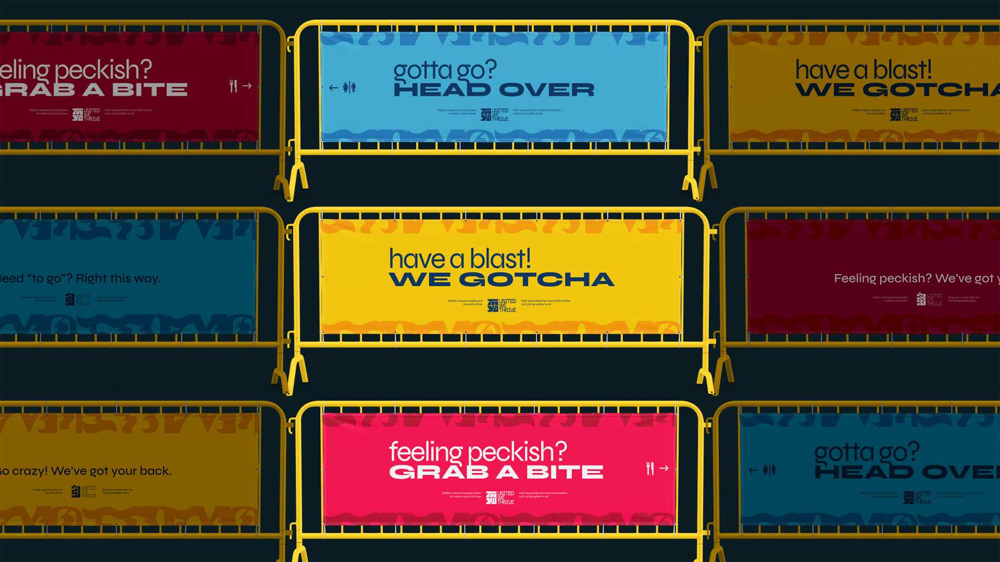
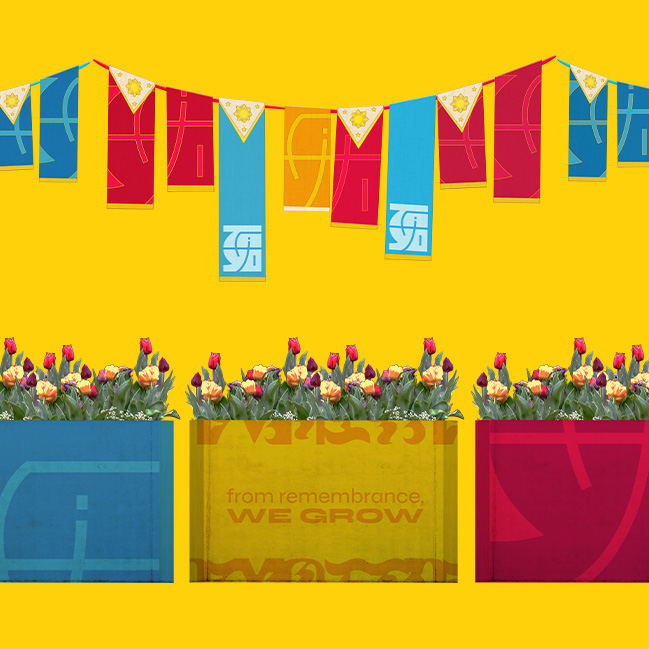
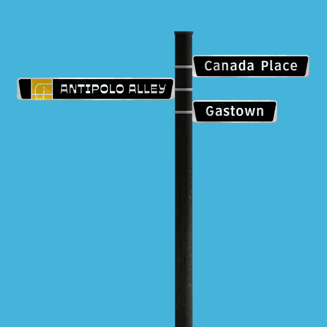
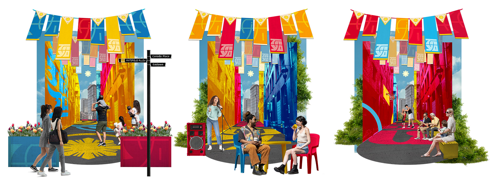

EVENT SAFETY ROOTED IN COMMUNITY
Founded in response to the 2025 Lapu Lapu Festival attack, Tayo is an event care and safety company redefining what it means to feel safe. Rooted in Filipino culture, Tayo brings trust, care, and community together to create spaces where people can celebrate freely, knowing they're looked after both physically and emotionally.







A WALK THROUGH THE ALLEY
Reflecting the bustling streets of the Philippines, Antipolo Alley welcomes visitors through an inviting entryway, complete with all-day karaoke and a classic basketball hoop at the centre of the lane.
By bringing a sense of home and familiarity to the Filipino community, Antipolo Alley serves as a symbol of safety and celebration, honouring those who have passed while nurturing the lives that continue to thrive.
